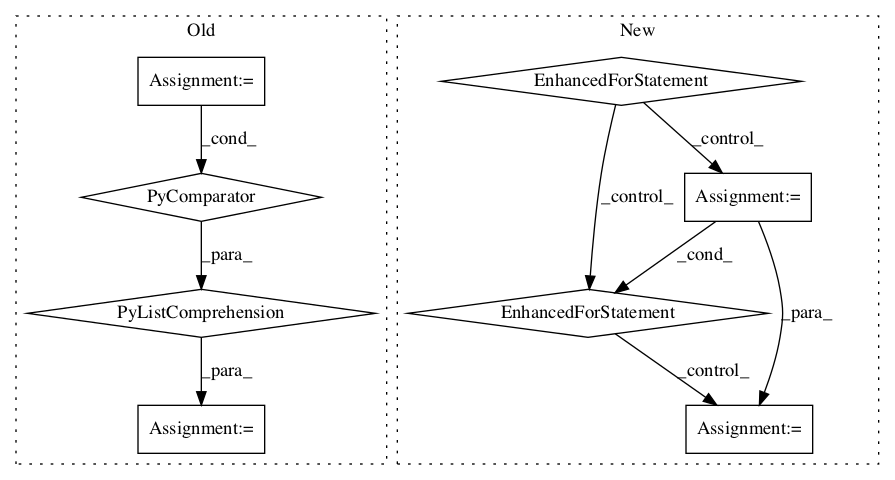

4e496fccd2ba96291845ac85f0946545320bdf35,geomstats/geometry/symmetric_matrices.py,SymmetricMatrices,get_basis,#SymmetricMatrices#,46

Before Change
def get_basis(self):
Compute the basis of the vector space of symmetric matrices.
basis = [
gs.array_from_sparse([
(row, col), (col, row)], [1., 1.], (self.n, self.n))
for row in gs.arange(self.n)
for col in gs.arange(row, self.n)]
basis = gs.stack(
basis) * (gs.ones((self.n, self.n)) - 1. / 2 * gs.eye(self.n))
return basis
After Change
def get_basis(self):
Compute the basis of the vector space of symmetric matrices.
basis = []
for row in gs.arange(self.n):
for col in gs.arange(row, self.n):
if row == col:
indices = [(row, row)]
values = [1.]
else:
indices = [(row, col), (col, row)]
values = [1., 1.]
basis.append(gs.array_from_sparse(
indices, values, (self.n, ) * 2))
basis = gs.stack(basis)
return basis
basis = property(get_basis)
In pattern: SUPERPATTERN
Frequency: 3
Non-data size: 8
Instances
Project Name: geomstats/geomstats
Commit Name: 4e496fccd2ba96291845ac85f0946545320bdf35
Time:
Author: null
File Name: geomstats/geometry/symmetric_matrices.py
Class Name: SymmetricMatrices
Method Name: get_basis
Project Name: openai/baselines
Commit Name: b71152eea0470ac2629c33e0fc66a54fe494949f
Time:
Author: null
File Name: baselines/common/vec_env/dummy_vec_env.py
Class Name: DummyVecEnv
Method Name: step_wait
Project Name: openai/baselines
Commit Name: b71152eea0470ac2629c33e0fc66a54fe494949f
Time:
Author: null
File Name: baselines/common/vec_env/dummy_vec_env.py
Class Name: DummyVecEnv
Method Name: reset